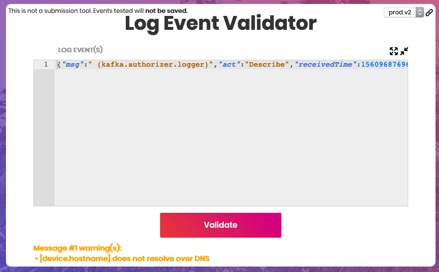
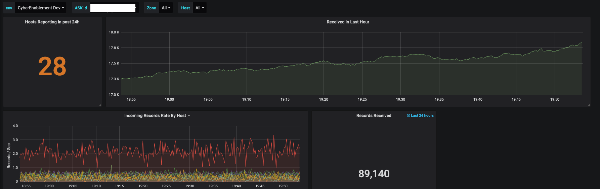

Timber! Security Logging at UnitedHealth Group
@SerenaTiede
Who is Optum
Optum is the health services and innovation company within UnitedHealth Group
About Me
What Problem am I trying to solve?
Long log ingest times
Inconsistent Log Formats
Vendor lock in
Outline
Schema
Streaming
Pain Points and Tips
8 Required Fields
device.vendor
device.product
device.hostname
device.ip4
timeStamp
msg
application.id
application.name
Why You Want a Schema
It's hard to parse a variety of formats
Avro gives pretty much free type validation
Next to no need for data cleanup
How to Sell Your Schema
Change Policy
Give Feedback
Have an open Slack/Flowdock Channel
Be Patient
Log Validator

Grafana Customer View

Why Should You Stream Logs
get logs off of a compromised endpoint
a good way to lower your time to detect issues
Kafka
How do people actually send logs
filebeat agent via chef
the official logging java package
or any other method
Streams Apps
Lower latency than batch processing
Real time metrics on logs coming in
Streams run in kubernetes
3 types of streams (validation, elastic indexer, and hdfs writer)
Firewall Order of Operations
do any bootstrapping and non kafka ops
add node to firewall rules
add node to the kafka cluster
optional: rebalance partitions
Infra and Change Management
Instrument All the Things!
Small team
No is a complete sentence
Closing and final thoughts
helpful links
deck pdf
deck with speaker notes
Twitter: @SerenaTiede
Github: LadySerena